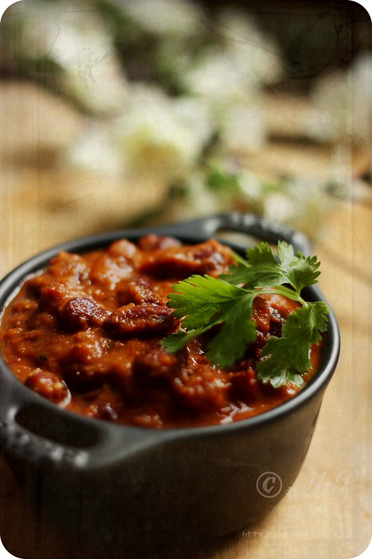

Homepage
Rajma Recipe

Description
So, here we will be providing the steps to make Rajma dish
Ingredients used
- 1 cup soaked Rajma
- 1 large Onion (finely chopped)
- 2 Tomato (pureed)
- 1 tsp ginger-garlic paste
- 2 tbsp oil or Butter
- ½ tsp Cumin Seeds
- ½ tsp Turmeric
- 1 tsp Coriander Powder
- ½ tsp Red Chili Powder
- 1 tsp Garam Masala
- Salt to taste
- Fresh Coriander Leaves for garnish
Steps
- Soak rajma overnight, then pressure cook until soft.
- Heat oil in a pan and add cumin seeds.
- Add chopped onion and sauté until golden.
- Add ginger-garlic paste and Cook for about 1 minute.
- Add tomato puree, turmeric, coriander powder, chili powder, and salt. Cook until oil separates.
- Add cooked rajma with some of its cooking water.
- Cook on low heat for 15 to 20 minutes so the gravy thickens.
- Sprinkle garam masala and garnish with coriander leaves.
Now you can serve this hot with rice or brread.